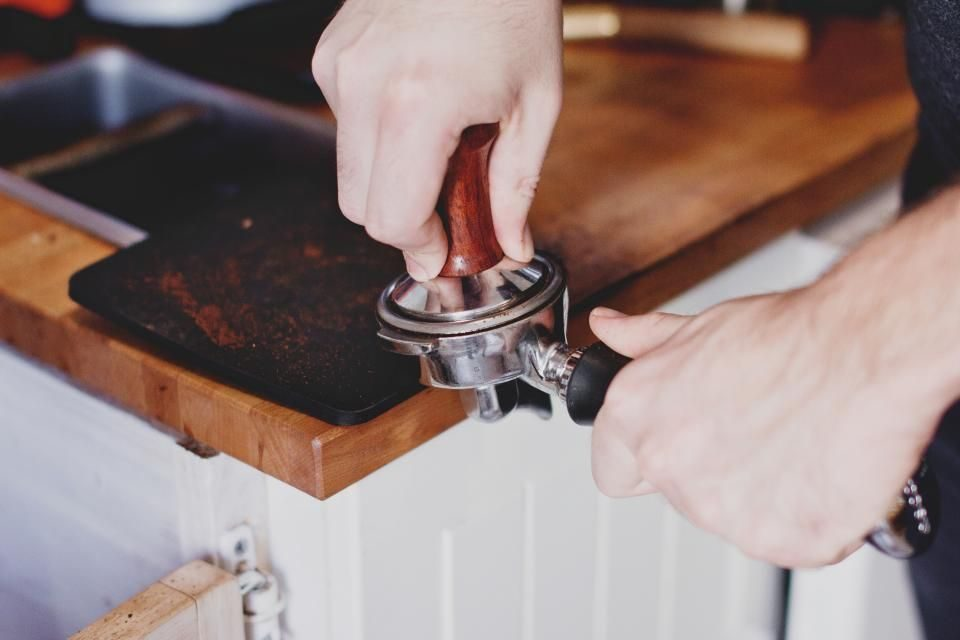

Ana sayfa / İletişim
İletişim ve yol tarifi
Caferağa'da, Gürbüztürk Sokağı'ndayız.
Adres, harita, haftalık saatler ve bize ulaşmanın en kolay yolları bu sayfada. Vapurla gelecekseniz, Kadıköy İskelesi'nden sonrası için aşağıya bakın.
Adres ve iletişim bilgileri
Gürbüztürk Sok. No:29/B
Caferağa, 34710 Kadıköy/İstanbul
Salı–Pazar açık · Pazartesi kapalı
- Telefon0542 235 86 89
- WhatsAppMesaj yazın
- Instagram@deniznadidedurubreakfast
- Google4,8 puan · 1.157 yorum
Gürbüztürk Sok. No:29/B
Harita yükleniyor. Görünmüyorsa “Yol tarifi alın” düğmesiyle Google Haritalar'da açabilirsiniz.
Haftalık saatler
Her gün aynı saatte açıyoruz, kapanış güne göre değişiyor.
Salı ve Perşembe–Pazar 10:00–17:00, Çarşamba 10:00–16:00 arası açığız; Pazartesi kapalıyız. Bayram ve özel günlerde saatler değişebilir; gelmeden önce aramanızı öneririz.
Bir güne dokunursanız, o gün için yer talebi formu açılır.
- Pazartesikapalı günKapalı
- Salıher hafta
- Çarşambaher hafta
- Perşembeher hafta
- Cumaher hafta
- Cumartesiher hafta
- Pazarher hafta
Hızlı bir soru
Ne sormak istediğinizi seçin; mesajınız hazır olsun, WhatsApp'tan tek dokunuşla gönderin.
Yer talebi için ayrıntılı form Rezervasyon sayfasında.
Kime: Deniz Nadide Duru Breakfast · WhatsApp
Merhaba, Deniz Nadide Duru Breakfast hakkında bilgi almak istiyorum.
Nasıl gelinir?
Kadıköy'e şehrin her yanından ulaşım var. Sonrası için haritadaki yol tarifini kullanmanız en kolayı.
Vapur
Eminönü, Karaköy ve Beşiktaş'tan Kadıköy'e vapur seferleri var. İskeleden Moda yönüne yürüyerek ya da tramvayla devam edebilirsiniz.
Metro
M4 metro hattının Kadıköy durağına gelip oradan Moda yönüne geçebilirsiniz.
Marmaray
Marmaray'la Ayrılık Çeşmesi'ne gelip M4 metroya aktarma yaparak Kadıköy'e ulaşabilirsiniz.
Nostaljik tramvay
Kadıköy–Moda tramvayı Bahariye ve Moda Caddesi üzerinden halka çizerek döner; semti görmenin de keyifli bir yolu.
Otobüs ve dolmuş
Kadıköy merkezine şehrin birçok noktasından otobüs ve dolmuş hatları gelir.
Araçla
Moda'nın sokakları dar olabilir ve park yeri bulmak zaman alabilir; toplu taşıma çoğu zaman daha rahattır.

Temsili görselSofradan haberler
Güncel paylaşımlar için Instagram hesabımıza göz atın; menü ve yer durumu için en hızlı yol WhatsApp.